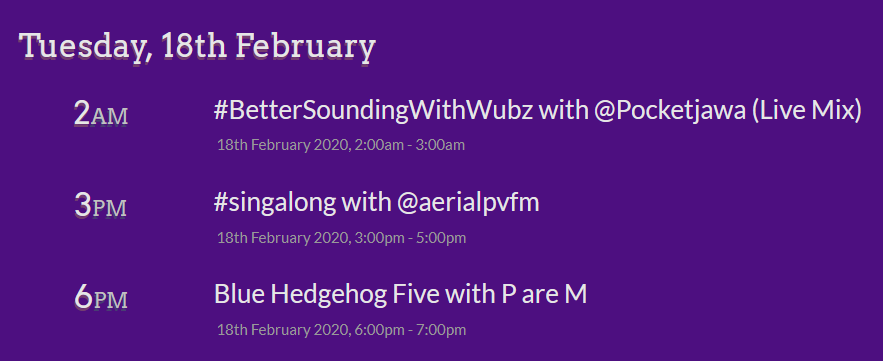

The puzzle consists of one large image, one audio file made of 14 five-second audio clips, 14 smaller pictures with numbers, and some extra information at the end.
Each audio clip is from a song published by Ponies at Dawn, a group that releases compilation albums of songs from the brony music community with a pay-what-you-want fee. Proceeds from holiday albums go towards charities, and proceeds from other albums go towards the artists. Consider sending something their way if you liked their work!
After poking at the puzzle for a bit, solvers should find the following:
At this point, there are a few strategies to identifying everything. You can search the song lyrics in quotes, which will often turn up the Bandcamp page for that song. You can solve the pictionary, cross-reference it with the list of songs on Recollections, and check it matches an audio clip. Or, you can Shazam the music clips, which we didn't expect to work, but testsolvers proved us wrong.
Taking the index provided with each pictionary image, indexing into the song name, then ordering based on the given audio gives the next message.
| Song Name (in Audio Order) | Pictionary Number | Indexed Letter |
|---|---|---|
| Fly Like You | 1 | F |
| Not Much To Miss | 11 | I |
| Where Is Your Heaven Now | 18 | N |
| Hello Commander | 12 | D |
| Night Queen VIP | 10 | N |
| Waking Up Alone | 13 | E |
| Start Again (IKX Remix) | 13 | X |
| Let There Be Light | 4 | T |
| On Wings Of Moonlight | 14 | L |
| Solidarity (In This Together) | 10 | Y |
| My Monstrosity | 8 | R |
| It's Raining Now | 1 | I |
| What More Can I Say | 9 | C |
| Insane | 3 | S |
We get "FIND NEXT LYRICS", so let's do so. Each audio clip ends in the middle of the song. Referring to the lyrics given on the Bandcamp page, find the next word that would be sung, reading in the same order as before.
| Song Name (in Audio Order) | Given Lyrics | Next Word |
|---|---|---|
| Fly Like You | "I was scratchin' an itch that I just couldn't find, And mah little" | Pegasister |
| Not Much To Miss | "Already had your chance, No reason to wonder why" | Once |
| Where Is Your Heaven Now | "When the world is just so hard with you, And you feel there is" | Nowhere |
| Hello Commander | "-ear, It's been a long time" | You've |
| Night Queen VIP | "Hear them cry, Sweet" | Victory |
| Waking Up Alone | "Who are we? What's going on here? Let's go home" | I |
| Start Again (IKX Remix) | "to let, Our colours fly high, And I know that, It's not too" | Late |
| Let There Be Light | "I'm standing strong so let there be" | Light |
| On Wings Of Moonlight | "Spending every night alone" | Excluded |
| Solidarity (In This Together) | "Every time I look back at the place we all came from" | Familiar |
| My Monstrosity | "So obscure, Where is" | My |
| It's Raining Now | "some fun! Build a fortress, out of blankets, Won't" | Come |
| What More Can I Say | "can't see, why I must be, the" | One |
| Insane | "There's something about your eyes, That fills" | Me |
Reading the first letters of the next lyrics gives "PONYVILLEFMCOM". This is a pointer to PonyvilleFM, a pony radio station that plays pony EDM 24/7. Now the extra information should make more sense - it matches the styling of PonyvilleFM's schedule page. If we navigate to the full schedule, we see that on the 18th of February, at 6 PM UTC, there's an event named "Blue Hedgehog Five with P are M", short for Puzzles are Magic.

Puzzles are Magic isn't actually hosting a PonyvilleFM show on the 18th, but you do want "Blue Hedgehog Five", which is a cluephrase for the answer, SONIC.
"It's a Long Story" was the first puzzle I knew I wanted to make for Puzzles Are Magic. This was the 2nd. I knew there was no way this would fly in a non-MLP themed hunt, and I wanted to shine a spotlight on the lesser-known side of the brony music scene. Many of the most popular brony songs are from the 2011-2013 era, but there's plenty of on-going work that's more like original music inspired by MLP, rather than remixes of MLP songs. I hope you enjoyed the deep, narrow dive into pony music.
Going in, I had the following design goals:
The pictionary approach gave a way to figure out song titles without having to listen to tons of music, and making the cluephrase come from the next word in the song requires listening to the audio clips to figure out where they stop. I intended for solvers to rely on pictionary as the main ID mechanism, but testsolving showed you really don't need many lyrics for Google to find the songs.
The pictionary was drawn by me in Microsoft Paint, by dragging a computer mouse around. I'm not great at art.
In an earlier draft, the Schedule portion matched PonyvilleFM's full schedule page exactly, including "The next 30 days" and "All times are displayed in GMT/UTC". Turns out searches for either of those phrases with "pony" was enough to find the schedule page! This puzzle's construction repeatedly taught me that it's easy to make a sentence of English that's never been seen before.
It's still possible to shortcut directly to the answer, if you recognize PonyvilleFM purely from the style of the text, but at that point, you're a big enough fan of pony music that you can probably forward-solve without much trouble.
Huge thanks to Squirrel for agreeing to add an event to the PonyvilleFM schedule, and for responding so quickly when the PonyvilleFM full schedule went down in the middle of hunt. While the site was getting fixed, we redirected solvers to PonyvilleLive, which shares the same Google Calendar. What, did you think PonyvilleFM was the only pony radio station?
If you're looking for more pony music, I thought Eternal was solid. My favorites are Replacer - Pony is Dead, Long Live Pony, Koa - To The Nines, and AnNy Tr3e - You Are My Star. And although they aren't on Eternal, I should give shoutouts to John Kenza - Love and Exiark - Frostfire, for getting me into the Ponies at Dawn catalog.